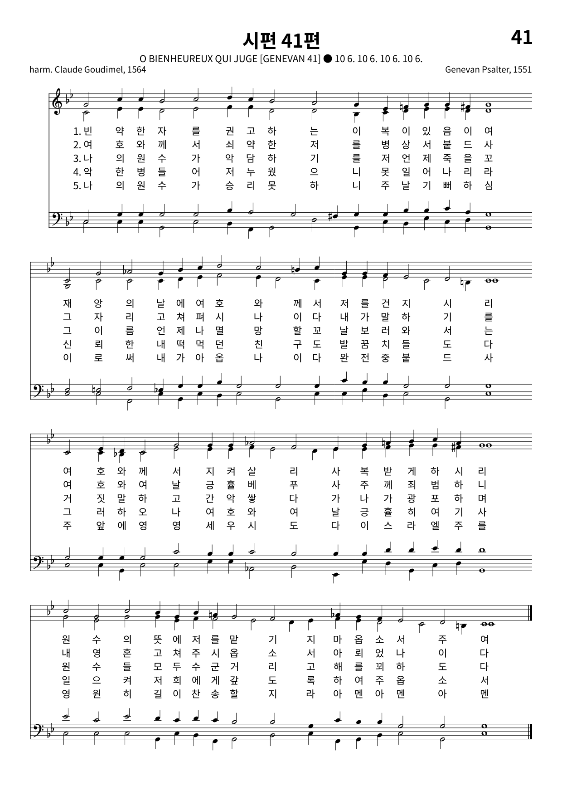

시편 41편
O BIENHEUREUX QUI JUGE [GENEVAN 41] · 10 6. 10 6. 10 6. 10 6.
곡조: Genevan Psalter, 1551 · 화성: Claude Goudimel, 1564 · 가사: 개역한글판 시편 41편 편역(AI 초벌 편역판 · 신학 감수 전) · 5절
악보 PDF MusicXML(출력용) MusicXML(반주용, 전주·반복 포함) 개역한글 시편 41편 읽기

가사
1절
빈약한 자를 권고하는 이
복이 있음이여
재앙의 날에 여호와께서
저를 건지시리
여호와께서 지켜 살리사
복 받게 하시리
원수의 뜻에 저를 맡기지
마옵소서 주여
빈약한 자를 권고하는 이
복이 있음이여
재앙의 날에 여호와께서
저를 건지시리
여호와께서 지켜 살리사
복 받게 하시리
원수의 뜻에 저를 맡기지
마옵소서 주여
2절
여호와께서 쇠약한 저를
병상서 붙드사
그 자리 고쳐 펴시나이다
내가 말하기를
여호와여 날 긍휼 베푸사
주께 죄 범하니
내 영혼 고쳐 주시옵소서
아뢰었나이다
여호와께서 쇠약한 저를
병상서 붙드사
그 자리 고쳐 펴시나이다
내가 말하기를
여호와여 날 긍휼 베푸사
주께 죄 범하니
내 영혼 고쳐 주시옵소서
아뢰었나이다
3절
나의 원수가 악담하기를
저 언제 죽을꼬
그 이름 언제나 멸망할꼬
날 보러 와서는
거짓 말하고 간악 쌓다가
나가 광포하며
원수들 모두 수군거리고
해를 꾀하도다
나의 원수가 악담하기를
저 언제 죽을꼬
그 이름 언제나 멸망할꼬
날 보러 와서는
거짓 말하고 간악 쌓다가
나가 광포하며
원수들 모두 수군거리고
해를 꾀하도다
4절
악한 병 들어 저 누웠으니
못 일어나리라
신뢰한 내 떡 먹던 친구도
발꿈치 들도다
그러하오나 여호와여 날
긍휼히 여기사
일으켜 저희에게 갚도록
하여 주옵소서
악한 병 들어 저 누웠으니
못 일어나리라
신뢰한 내 떡 먹던 친구도
발꿈치 들도다
그러하오나 여호와여 날
긍휼히 여기사
일으켜 저희에게 갚도록
하여 주옵소서
5절
나의 원수가 승리 못하니
주 날 기뻐하심
이로써 내가 아옵나이다
완전 중 붙드사
주 앞에 영영 세우시도다
이스라엘 주를
영원히 길이 찬송할지라
아멘 아멘 아멘
나의 원수가 승리 못하니
주 날 기뻐하심
이로써 내가 아옵나이다
완전 중 붙드사
주 앞에 영영 세우시도다
이스라엘 주를
영원히 길이 찬송할지라
아멘 아멘 아멘